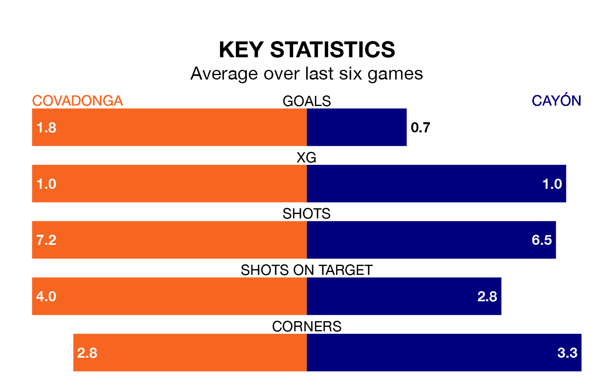

Struggling Covadonga face Cayón at the Estadio Juan Antonio A. Rabanal on Sunday looking to build on a win in their last league outing.
After securing all three points with a 5-0 victory over Langreo on March 9, Covadonga sit 17th in the Segunda División RFEF Group 1.
They travel to play a Cayón side 16th in the standings, who were held in their last match, 1-1 against Arandina CF, on March 10.
Covadonga are in mixed form in the Segunda División RFEF Group 1, with two wins and two draws from their last six games.
With no wins and three draws over that period, Cayón's form is worse – they have taken three points from 18, compared to the home side's eight.
With 24 goals in 26 games so far this season, the visitors are scoring at below the league average rate with 0.9 goals per game. And they are conceding more than average, letting in 34 goals at a rate of 1.3 per game.
Covadonga, meanwhile, are average scorers, with 1.1 goals per game. They have conceded 1.8 goals per game.
Updated: 15:10 (UTC), 15/03/24